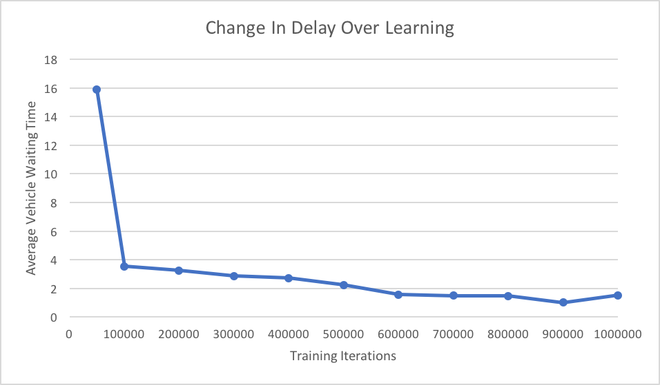

Towards Assured Artificial Intelligence
Resilient Traffic Grids
Aidan Smith and Brian Wheatman
Why assure Artificial Intelligence?
- AI systems have the capability to be more efficient than standard methods most of the time
- Recent advances in deep learning architecture has increased both the performance as well as the types of problems that AI systems have been able to solve
- Due to the black-box and evolving nature of AI, it is difficult to make theoretical guarantees about performance of AI systems
- It is not feasible to train an AI on every situation it could ever encounter, and some current research believes that edge cases are inherent to most deep learning methods
- These edge cases can be an issue for systems where safety is at risk and mistakes can have serious consequences
Our approach to assuring AI systems
- Treat the AI as a black box which is able to give different outputs for the same inputs
- Have a monitor which checks over the state of the overall system for certain invariants
- When the system is close to breaking one of the invariants, switch away from the AI controller to a known system that performs well
- When the system is no longer in danger of breaking any invariants switch back to the AI controller
Requirements for Assured AI with our approach
- AI system for solving the problem
- We believe that for many problems we can train an AI system to be better than any standard approach on the average case
- Known safe algorithm for solving the problem
- We need a safe static approach so that we can ensure correct behavior in any case
- This algorithm gives predictable performance
- Monitor which checks the state of the overall system and can switch controllers to maintain assurances
Our project
- For our project we focused on the first two components, the controllers
- An AI algorithm to perform well in the average case
- A static algorithm with predictable and assured performance
- To complete these we started by looking into different traffic simulators and Reinforcement Learning (RL) frameworks which work with them
- We designed a model traffic environment to work in
- Grids of roads with a smart traffic light at every intersection
- We trained a model which is able to improve throughput for a traffic flow
Safe Controller
We start with a very simple safe controller which we can reason about.
- The lights are all in sync
- They stay green in one direction for a set amount of time
- This amount of time is enough to clear out the road
- Then switch to allow cars from the other direction
This means a car will wait at most once per direction it travels on its path through the network
SUMO
- We chose to use the SUMO traffic simulator as it provides all of the functionality we need without being overly complex
- Allows us to use arbitrary Python code to control traffic lights. This will allow us to use Python’s Machine Learning libraries to build an AI system
- Our first few weeks of the project were spent writing tools for SUMO that allow us to quickly generate n-by-n traffic grids and randomly generate cars.
First attempt at an AI system
- As a proof-of-concept, we began by creating a simple linear model to control the traffic lights. We let the number of vehicles on each edge of the grid be the features for the model. We multiply these features by an n2-by-4n2 matrix to get values for how to control each of the traffic lights.
- We preset the matrix to control the lights in a way such that the direction with the most incoming cars will always be green. We then repeatedly add random noise to the matrix and retest the system, moving the matrix in that direction if it performs better.
- While we succeeded in being able to control the lights using this system, the model failed to meaningfully learn anything after training it for over a day.
Limitations and switch to Flow
- We tried to use Tensorflow to train a more complicated RL model, but this proved more challenging than initially expected.
- Instead, we searched for existing software that could help make this task easier.
- We made the switch to using Flow in order to simplify the more tedious parts of building an RL model.
Flow
- Flow is a traffic control benchmarking framework. Its provides a suite of traffic control scenarios (benchmarks), tools for designing custom traffic scenarios, and integration with deep reinforcement learning and traffic microsimulation libraries.
- Flow turns a traffic simulation from sumo into the openAI gym environment which has been well set up to interface with AI tools.
- Flow is compatible with SUMO.
Difficulties
- Turning
- Right of way
- Blocked intersections
- A single left turn could bring an entire intersection to a standstill
- Lane changes
- Grid lock and number of cars
- If the number of cars is too high the whole drid can just turn to gridlock and no cars move and the lights can never get any reward
- Learning the tools
- Difference between types of green lights (whether to yield on left turns)
- Car crashes cause silent program crashes
Our Model
- 4 intersections, no turns
- Traffic light can see up to 3 cars in each direction
- Traffic light tries to minimize the average delay of all cars currently in the network
- Yellow lights are .5 timesteps long
- Initially, the model randomly flips back and forth too fast for any cars to get through
- The model must learn not only when to switch from red to green, but also how long to stay green for
- We are measuring delay as the average amount of time each vehicle spent waiting at traffic lights
Safe Controller
Average delay is 12.5 time steps
RL Controller
50000 training iterations
Average delay is 15.9 time steps
1000000 training iterations
Average delay is 1.5 time steps

Sensitivity to the number of cars
| |
100 vehicles per hour
|
250 vehicles per hour
|
500 vehicles per hour
|
750 vehicles per hour
|
1000 vehicles per hour
|
|
Safe controller
|
13.6
|
9.65
|
11.0
|
13.1
|
23.2
|
|
50k training iterations
|
11.1
|
9.20
|
13.7
|
14.7
|
18.9
|
|
1000k training iterations
|
11.3
|
3.20
|
0.96
|
4.26
|
3.14
|
The model was trained on 500 vehicles per hour
Observations on Different Inputs
- The AI controller is able to support varying amounts of throughput, however is the best on the one it trains on
- One bad input is when we send very few cars through
- The safe controller breaks down when the number of cars get very high, this is because at higher rates, not all cars get through before it has a chance to switch again, so some cars have to wait twice
- Options for other safe controllers include varying the length of the green to find the right fit for the segment length or using green waves.
- Biasing cars towards one direction slightly increases performance of the AI controller
Conclusions and Future Directions
- We have shown that an AI controller can learn how to optimize traffic flow with very little information about a successful system.
- Next steps are finding inputs that the AI will perform worse than the safe controller
- Then we need to design a system that can safely switch between the two controllers
- Making a more realistic model with turns and more general traffic grids
Challenges and Lessons
- Importance of structure in ML problems
- ML is a field with many tools that are there to help solve problems
- However, these often assume that the problem is in very standardized form.
- For a classification type problem this form is very simple
- A set of data points, broken into three classes, train, test, and validate
- Each data point with a feature vector and a label
- Reinforcement Learning needs a very different structure
- You need an environment that you can step through
- A set of actions you can take at every step, which influence the reward you get at the end
- And an observation space
- Only once this structure is set up can the actual work on designing an AI system begin
slides
code